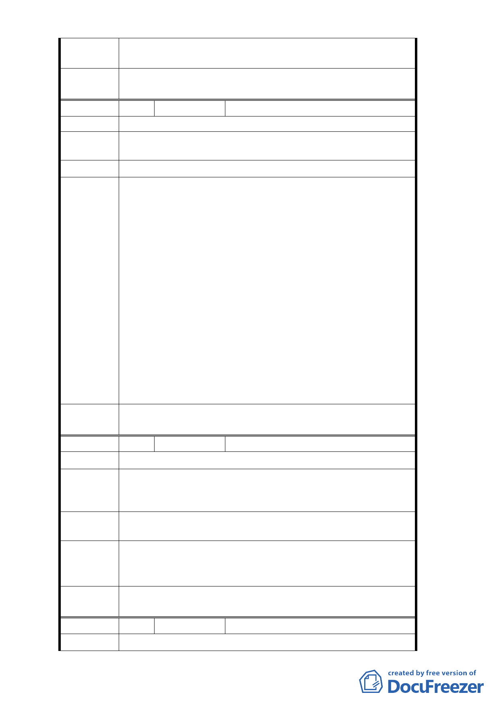

築容積之需求，仍建議循都市更新及容積移轉等相關獎勵
規定辦理。
委
決
員
會
議
同意依都市發展局建議處理意見辦理。
編 號3
陳情人 胡誌明
陳情位置 中正區中華路二段 75 巷 1 弄 13 號
陳情理由
因中華路二段鐵路地下化以後，路寬已成 40 公尺，符合
住三之一規定。
建議辦法 更改原住三之二成住三之一。
1. 為配合鐵路地下化及華翠大橋、萬板大橋通車，沿線
土地使用分區已於93年萬華區都市計畫通盤檢討案
內，調整鐵路沿線原住3地區之土地為住3－l（特）及
住3－2（特），其土地使用管制內容為放寬使用項目（比
照住3－1 、住3－2) ，惟考量全市性容積率管制及公
共設施供給程度，其使用強度（容積率及建蔽率）仍
都市發展 維持原分區住 3 之規定。
局建議處 2. 本案變更住宅區為商業區係依「修訂臺北市主要計畫
理 意 見 商業區（通盤檢討）計畫案」通案原則辦理及「變更
『修訂臺北市主要計畫商業區（通盤檢討）計畫案』
內有關商業區變更回饋相關規定案」辦理，依前開商
業區通檢之通案性原則，土地使用項目得酌予放寬，
惟使用強度應維持原使用分區之建蔽率及容積率；如
有增加建築容積之需求，仍建議循都市更新及容積移
轉等相關獎勵規定辦理。
委
決
員
會
議
同意依都市發展局建議處理意見辦理。
編 號4
陳情人 林玉華
陳情位置 中正區中華路二段 43 號
若住三改為商三特，容積及建蔽不變，但一些不適合住宅
陳情理由 區的營業種類都可進入，因改為商三特而破壞原本住宅品
質。
建議辦法
故而建議有商業區之名要有商業區之實，放寬容積及建蔽
率增加，如此更名才有意義。
都市發展
局建議處 同編號2
理意見
委
決
員
會
議
同意依都市發展局建議處理意見辦理。
編 號5
陳情人
陳情位置 廣州街 59 號
林永堂
- 21 -